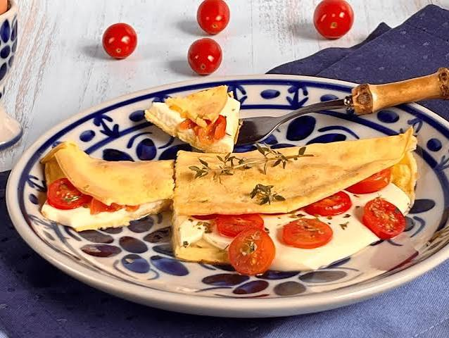

• 1 ovo
• 2 colheres de sopa de tapioca
• 2 colheres de sopa de queijo muçarela ralado
• 1/2 tomate picado
• 1 colher de sopa de requeijão
• 1 pitada de sal
• Orégano a gosto
• 1 fio de azeite
• Em uma tigela, misture o ovo, a tapioca e uma pitada de sal.
• Aqueça uma frigideira antiaderente e coloque a mistura.
• Deixe cozinhar em fogo baixo até a massa ficar firme.
• Vire a crepioca e espalhe o requeijão sobre uma das metades.
• Adicione o queijo, o tomate picado e o orégano.
• Dobre a crepioca ao meio e deixe o queijo derreter.
• Retire da frigideira e sirva ainda quente.